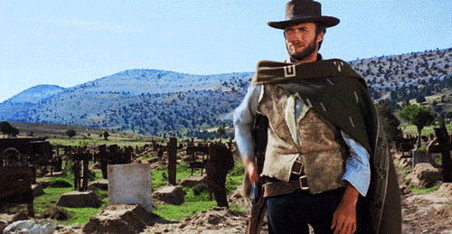

<!DOCTYPE html>
<html lang="es">
<head>
  <meta charset="UTF-8">
  <link rel="preconnect" href="https://fonts.googleapis.com">
  <link rel="preconnect" href="https://fonts.gstatic.com" crossorigin>
  <link href="https://fonts.googleapis.com/css2?family=Bebas+Neue&display=swap" rel="stylesheet">
  <link href="https://fonts.googleapis.com/css2?family=Barlow+Condensed:wght@100;300;400;500;700;900&display=swap" rel="stylesheet">
  <link href="https://fonts.googleapis.com/css2?family=Oswald:wght@200;300;400;500;600;700&display=swap" rel="stylesheet">
  <title>Presentación</title>
  <style>
    body {
      margin: 0;
      background-color: black;
      color: white;
      font-family: sans-serif;
      overflow: hidden;
    }
    #presentation {
      width: 100vw;
      height: 100vh;
      position: relative;
    }
    .center-button {
      position: absolute;
      top: 50%;
      left: 50%;
      transform: translate(-50%, -50%);
      padding: 1em 1em;
      font-size: 1.2em;
      cursor: pointer;
    }
    .page {
      background-color: black;
      color: white;
      width: 100%;
      height: 100vh;
      display: flex;
    }
    .page-center {
      align-items: center;
      justify-content: center;
      text-align: center;
    }
    .page-column {
      flex-direction: column;
      align-items: center;
      justify-content: center;
      text-align: center;
    }
    .monospace {
      font-family: 'Courier New', monospace;
    }
    .bebas {
      font-family: 'Bebas Neue', sans-serif;
    }
    .oswald {
      font-family: 'Oswald', sans-serif;
    }
    .barlow {
      font-family: 'Barlow Condensed', sans-serif;
    }
  </style>
</head>
<body>
  <div id="presentation"></div>

<script>
    const container = document.getElementById('presentation');

function startPage1() {
  container.innerHTML = '';
  const btn = document.createElement('button');
  btn.textContent = 'Iniciar';
  btn.className = 'center-button';
  btn.onclick = startPage2;
  container.appendChild(btn);
}

function startPage2() {
  container.innerHTML = '';
  container.className = 'page page-center bebas';

  const contenedor = document.createElement('div');
  contenedor.style.cssText = `
    display: flex;
    justify-content: center;
    align-items: center;
    height: 100%;
  `;
  container.appendChild(contenedor);

  const audio = new Audio('audio/beep.mp3');
  audio.loop = false;

  function imprimirConDelay() {
    for (let i = 3; i >= 0; i--) {
      setTimeout(() => {
        const circulo = document.createElement('div');
        circulo.textContent = i;
        circulo.style.cssText = `
          width: 500px;
          height: 500px;
          border-radius: 50%;
          border: 2px solid white;
          background-color: transparent;
          color: white;
          display: flex;
          align-items: center;
          justify-content: center;
          font-size: 480px;
          font-weight: 100;
          transition: all 0.3s ease-in-out;
        `;
        contenedor.innerHTML = '';
        contenedor.appendChild(circulo);
        audio.currentTime = 0;
        audio.play();
      }, (3 - i) * 2000);
    }

    setTimeout(() => {
      startPage3();
    }, 8000);
  }

  imprimirConDelay();
}

function startPage3() {
  container.innerHTML = '';
  container.className = 'page page-center oswald';

  const palabra = "INDIFERENTE";
  const texto = document.createElement('div');
  texto.style.cssText = `
    letter-spacing: -10px;
  `;

  for (let letra of palabra) {
    const span = document.createElement('span');
    span.textContent = letra;
    span.style.cssText = `
      font-size: 200px;
      font-weight: 400;
      transition: all 0.15s ease-in-out;
      display: inline-block;
    `;
    texto.appendChild(span);
  }

  container.appendChild(texto);

  const audio = new Audio('audio/intro.mp3');
  audio.play();

  const spans = texto.querySelectorAll('span');
  const intervaloTexto = setInterval(() => {
    spans.forEach(span => {
      const randomSize = 100 + Math.floor(Math.random() * 350);
      const randomWeight = 200 + Math.floor(Math.random() * 500);
      span.style.fontSize = `${randomSize}px`;
      span.style.fontWeight = `${randomWeight}`;
    });
  }, 200);

  setTimeout(() => {
    clearInterval(intervaloTexto);
    audio.pause();
    audio.currentTime = 0;
    setTimeout(startPage4, 500);
  }, 15000);
}

function startPage4() {
  container.innerHTML = '';
  container.className = 'page monospace';

  const textoWrapper = document.createElement('div');
  textoWrapper.style.cssText = `
    flex: 1;
    padding: 36px 48px;
    overflow-y: auto;
  `;

  const contenedor = document.createElement('div');
  contenedor.id = 'texto';
  contenedor.style.cssText = `
    font-size: 38px;
    white-space: pre-line;
  `;
  textoWrapper.appendChild(contenedor);
  container.appendChild(textoWrapper);

  const mensaje = `Un estado de ánimo indiferente se caracteriza por: la falta de interés, emoción o motivación hacia personas, objetos o situaciones. \n\nEs una actitud neutral donde no se experimentan ni inclinación ni aversión.\n\nNo es mi caso...\n\nfirmado: Joan `;

  const velocidad = 80;
  let i = 0;

  const tecla = new Audio("audio/type-writing-6834 (mp3cut.net).mp3");
  const campana = new Audio("audio/075856_typewriter-bell-amp-carriage-reset-82407.mp3");

  function escribir() {
    if (i < mensaje.length) {
      contenedor.innerHTML += mensaje.charAt(i);
      tecla.currentTime = 0;
      tecla.play();
      i++;
      setTimeout(escribir, velocidad);
    } else {
      campana.play();
      tecla.pause();
      setTimeout(startPage5, 1500);
    }
  }

  escribir();
}

function startPage5() {
  container.innerHTML = '';
  container.className = 'page page-center monospace';
  container.style.flexWrap = 'wrap';
  container.style.padding = '20px';
  container.style.fontSize = '1rem';
  container.style.overflowY = 'auto';

  const audio = new Audio('audio/ThanksfortheMemory.mp3');
  audio.loop = true;
  audio.volume = 0.5;
  audio.play();

  container.innerHTML = `
    <div class="titulo" style="width: 100%;">
      <h2 style="margin-bottom: 10px;">me es indiferente... me gusta el cine... ¡pon la que quieras!</h2>
    </div>
    <div class="imagenes" style="display: flex; flex-wrap: wrap; justify-content: center;">
      
      
      
      
      
      
      
      
      
      
      
      
      
      
    </div>
  `;

  setTimeout(startPage6, 6000);
}

function startPage6() {
  container.innerHTML = '';
  container.className = 'page page-center monospace';
  container.style.flexWrap = 'wrap';
  container.style.padding = '20px';
  container.style.fontSize = '1rem';
  container.style.overflowY = 'auto';

  const imagenes = [
    "img/beatles.jpg", "img/santana.jpg", "img/PinkFloid.jpg",
    "img/LedZeppelin.jpg", "img/ACDC.jpg", "img/IanDury.jpg",
    "img/Madness.jpg", "img/StrayCats.jpg", "img/GeneAmmons.jpg",
    "img/Clash.jpg", "img/StevieWonder.jpg", "img/SammyDavis.jpg",
    "img/Satchmo.jpg", "img/TeteMontoliu.jpg", "img/the-man-horn.jpg",
    "img/GerryMulligan.jpg", "img/LarrieCoryel.jpg", "img/PatMetheny.jpg",
    "img/GinoVannelli-cassette.jpg", "img/ManhattanTransfer.jpg", "img/JohnColtraneCD.jpg"
  ];

  const titulo = document.createElement('h2');
  titulo.textContent = '...y también me gusta la música...pon lo que quieras';
  container.appendChild(titulo);

  const galeria = document.createElement('div');
  galeria.style.cssText = `
    display: flex;
    flex-wrap: wrap;
    justify-content: center;
    gap: 5px;
    width: 100%;
  `;

  imagenes.forEach(src => {
    const img = document.createElement('img');
    img.src = src;
    img.alt = 'Imagen musical';
    img.style.cssText = `
      height: 170px;
      margin: 5px;
      border-radius: 4px;
      transition: transform 0.3s ease;
    `;
    img.onmouseover = () => img.style.transform = 'scale(1.1)';
    img.onmouseout = () => img.style.transform = 'scale(1)';
    galeria.appendChild(img);
  });

  container.appendChild(galeria);
  setTimeout(startPage7, 7000);
}

function startPage7() {
  container.innerHTML = '';
  container.className = 'page page-center monospace';
  container.style.fontSize = '3rem';
  container.style.padding = '40px';

  const mensajes = [
    "La indiferencia no siempre es ausencia.",
    "A veces es una forma de protección.",
    "Otras, una declaración silenciosa.",
    "Pero siempre dice algo.",
    "¿Y tú? ¿Qué eliges sentir?"
  ];

  const mensajeElemento = document.createElement('div');
  mensajeElemento.style.cssText = `
    width: 100%;
    transition: opacity 0.5s ease-in-out;
  `;
  container.appendChild(mensajeElemento);

  let index = 0;

  function mostrarMensaje() {
    mensajeElemento.style.opacity = 0;
    setTimeout(() => {
      mensajeElemento.textContent = mensajes[index];
      mensajeElemento.style.opacity = 1;
      index++;
      if (index < mensajes.length) {
        setTimeout(mostrarMensaje, 3000);
      } else {
        setTimeout(startPage8, 7000);
      }
    }, 600);
  }

  mostrarMensaje();
}

function startPage8() {
  container.innerHTML = '';
  container.className = 'page page-column barlow';

  showText("KONIEK", 3000, 500);

  setTimeout(() => {
    const button = document.createElement('button');
    button.textContent = 'Volver';
    button.style.cssText = `
      margin-top: 40px;
      padding: 15px 30px;
      font-size: 24px;
      background-color: white;
      color: black;
      border: none;
      border-radius: 8px;
      cursor: pointer;
      transition: background-color 0.3s;
    `;
    button.onmouseover = () => button.style.backgroundColor = '#ddd';
    button.onmouseout = () => button.style.backgroundColor = 'white';
    button.onclick = () => window.location.href = 'index.html';

    container.appendChild(button);
  }, 3500);
}

function showText(texto, duracion, tamaño = 100) {
  const mensaje = document.createElement('div');
  mensaje.textContent = texto;
  mensaje.style.cssText = `
    font-size: ${tamaño}px;
    font-weight: 700;
    width: 100%;
    text-align: center;
    transition: opacity 0.5s ease-in-out;
  `;
  container.appendChild(mensaje);

  setTimeout(() => {
    mensaje.style.opacity = 0;
    setTimeout(() => {
      mensaje.remove(); // 🔹 Eliminamos el texto del DOM al desvanecerse
    }, 500);
  }, duracion);
}

startPage1();
</script>
</body>
</html>
